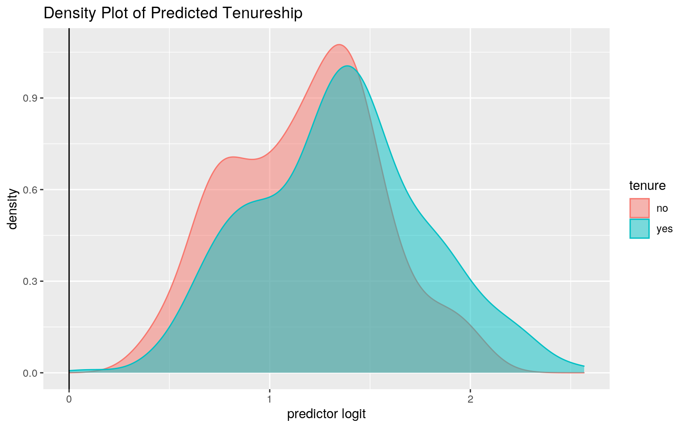
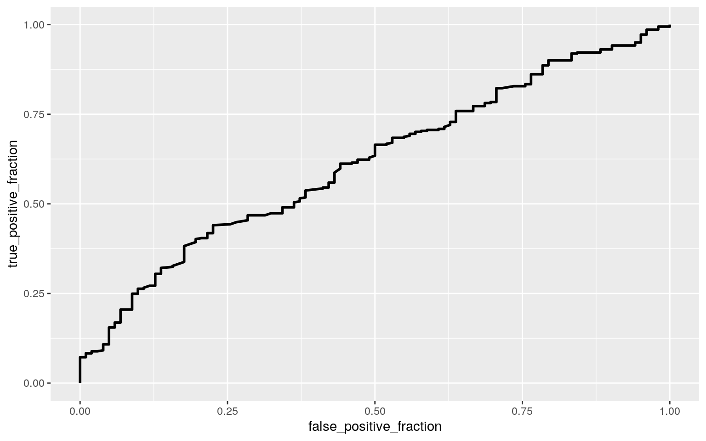

# LEAVE THIS CHUNK ALONE!
library(knitr)
opts_chunk$set(fig.align = "center", fig.height = 5, message = FALSE,
warning = FALSE, fig.width = 8, tidy.opts = list(width.cutoff = 60),
tidy = TRUE)
class_diag <- function(probs, truth) {
tab <- table(factor(probs > 0.5, levels = c("FALSE", "TRUE")),
truth)
acc = sum(diag(tab))/sum(tab)
sens = tab[2, 2]/colSums(tab)[2]
spec = tab[1, 1]/colSums(tab)[1]
ppv = tab[2, 2]/rowSums(tab)[2]
if (is.numeric(truth) == FALSE & is.logical(truth) == FALSE)
truth <- as.numeric(truth) - 1
# CALCULATE EXACT AUC
ord <- order(probs, decreasing = TRUE)
probs <- probs[ord]
truth <- truth[ord]
TPR = cumsum(truth)/max(1, sum(truth))
FPR = cumsum(!truth)/max(1, sum(!truth))
dup <- c(probs[-1] >= probs[-length(probs)], FALSE)
TPR <- c(0, TPR[!dup], 1)
FPR <- c(0, FPR[!dup], 1)
n <- length(TPR)
auc <- sum(((TPR[-1] + TPR[-n])/2) * (FPR[-1] - FPR[-n]))
data.frame(acc, sens, spec, ppv, auc)
}0. The first dataset I chose measured the impact of beauty on a professor’s teaching ratings at the University of Texas at Austin from the academic years of 2000-2002. This dataset measured a total of 463 courses and indicated the professor’s gender, age, whether they are a minority or native English speaker, beauty rating, tenure and division. The course was identified by its credits, students in the evaltuation and total number of students. The purpose of this dataset is to evaluate the correlation, if any, between a professor’s evaluation by their student’s to ther beauty, gender, age and minority status.
I chose these data-sets because I thought it was very interesting. As a senior at UT, I have seen some correlation between student’s perspective of a professor and their perceived attractiveness. More so, I plan on becoming a professor one day and I think it might be interesting to see how i may be perceieved by my students based on my gender, age and general attractiveness.
library(tidyverse)
Teacher <- read_csv("~/TeachingRatings.csv")
glimpse(Teacher)## Rows: 463
## Columns: 13
## $ X1 <dbl> 1, 2, 3, 4, 5, 6, 7, 8, 9, 10, 11, 12, 13, 14, 15, 16, 17…
## $ minority <chr> "yes", "no", "no", "no", "no", "no", "no", "no", "no", "n…
## $ age <dbl> 36, 59, 51, 40, 31, 62, 33, 51, 33, 47, 35, 37, 42, 49, 3…
## $ gender <chr> "female", "male", "male", "female", "female", "male", "fe…
## $ credits <chr> "more", "more", "more", "more", "more", "more", "more", "…
## $ beauty <dbl> 0.2899157, -0.7377322, -0.5719836, -0.6779634, 1.5097940,…
## $ eval <dbl> 4.3, 4.5, 3.7, 4.3, 4.4, 4.2, 4.0, 3.4, 4.5, 3.9, 3.1, 4.…
## $ division <chr> "upper", "upper", "upper", "upper", "upper", "upper", "up…
## $ native <chr> "yes", "yes", "yes", "yes", "yes", "yes", "yes", "yes", "…
## $ tenure <chr> "yes", "yes", "yes", "yes", "yes", "yes", "yes", "yes", "…
## $ students <dbl> 24, 17, 55, 40, 42, 182, 33, 25, 48, 16, 18, 30, 28, 30, …
## $ allstudents <dbl> 43, 20, 55, 46, 48, 282, 41, 41, 60, 19, 25, 34, 40, 36, …
## $ prof <dbl> 1, 2, 3, 4, 5, 6, 7, 8, 9, 10, 11, 12, 13, 14, 15, 16, 17…1. After running a MANOVA test to see of a professor’s beauty rating and course evaluation is different across the teacher’s gender, the results demonstrated that there is a significant effect (p=1.56e-05). This indicates that for at least beauty and evaluation, they are different with one gender from the other. Since we found a significant effect, an univariate ANOVA was conducted and determined that for for both beauty and evaluation, there were differences for gender (beauty p=0.0068, eval p=0.0012). Next, follow up t-tests were conducted and found a p value of 0.006 for genders for beauty and a p value of 0.0012 for evaluation.
At the end of the MANOVA testing, I performed a total of 5 tests (2 t-tests, 2 ANOVAS and 1 MANOVA). According to my tests, the probability of at least 1 type I error should be 1-0.95^5= 0.226, however, once it is adjusted to equal 0.05/5 it is 0.01, which is significant. Despite the results being significant, it is important to take note that several MANOVA assumptions were likely violated in order to conduct this test. For instance, examination of bivariate density plots for each group revealed that my response variables are not multivariate normal thus indicating that we did not meet the assumption.
## female male
## statistic 0.9804633 0.9711292
## p.value 0.008030547 3.061319e-05## Df Pillai approx F num Df den Df Pr(>F)
## gender 1 0.046997 11.342 2 460 1.555e-05 ***
## Residuals 461
## ---
## Signif. codes: 0 '***' 0.001 '**' 0.01 '*' 0.05 '.' 0.1 ' ' 1## Response beauty :
## Df Sum Sq Mean Sq F value Pr(>F)
## gender 1 4.542 4.5416 7.4033 0.006757 **
## Residuals 461 282.806 0.6135
## ---
## Signif. codes: 0 '***' 0.001 '**' 0.01 '*' 0.05 '.' 0.1 ' ' 1
##
## Response eval :
## Df Sum Sq Mean Sq F value Pr(>F)
## gender 1 3.186 3.1859 10.562 0.001239 **
## Residuals 461 139.053 0.3016
## ---
## Signif. codes: 0 '***' 0.001 '**' 0.01 '*' 0.05 '.' 0.1 ' ' 1##
## Pairwise comparisons using t tests with pooled SD
##
## data: Teacher$beauty and Teacher$gender
##
## female
## male 0.0068
##
## P value adjustment method: none##
## Pairwise comparisons using t tests with pooled SD
##
## data: Teacher$eval and Teacher$gender
##
## female
## male 0.0012
##
## P value adjustment method: none## [1] 0.2262191## [1] 0.012. For this project, I conducted a randomization test to see whether or not there was a difference in mean beauty rating between minority (n=64) or Caucasian (n=399) professors.
Ho= mean beauty rating is the same for minority vs. caucasion professor Ha= mean beauty rating is the different for minority vs. caucasion professor
A randomization test of 5000 random permutations, we sampled at random from that set of permutations and so that our results are equivalent. P-value 0.4764 was computed signifying that the null hypothesis cannot be rejected indicating that the mean beauty rating is indeed same for minority and caucasian professors.
table(Teacher$minority)##
## no yes
## 399 64race1 <- Teacher %>% group_by(minority) %>% summarize(means = mean(beauty)) %>%
summarize(mean_diff = diff(means))
race1## # A tibble: 1 x 1
## mean_diff
## <dbl>
## 1 0.0755rand_1 <- vector()
for (i in 1:5000) {
new <- data.frame(beauty = sample(Teacher$beauty), minority = Teacher$minority)
rand_1[i] <- mean(new[new$minority == "yes", ]$beauty) -
mean(new[new$minority == "no", ]$beauty)
}
{
hist(rand_1, main = "", ylab = "")
abline(v = c(-0.07546074, 0.0754607), col = "red")
}mean(rand_1 > 0.07546074 | rand_1 < -0.07546074)## [1] 0.48423.
In order to build a linear regression model predicting course evaluation rating from the interaction of age and tenureship, the numeric variable age was mean-centered. According to the results, the mean predicted evaluation score for non-tenured professor’s with average age is 4.15. Tenured professors with averaged age ha a predicted evaluation score that is 0.196 points lower than non-tenured professors. Furthermore, for every 1-unit increase in age, predicted evaluation goes down by 0.01 points. Slope of age on evaluation for tenured is 0.009 greater than for non-tenured. Lastly, 0.024 of the variance is explained by the model.
When testing for linearity and homoskedsaticity with ggplot of residual value to fitted value, the graph did not show anything too alarming. Furthermore, when tested for normality through a qqplot, my data seems relatively normal with some deviance around the top of the graph. I wanted to extra insurance of formally testing the normality through the Shapiro-Wilk test, and discovered that normality is indeed not met (p=2.8E-6) meaning the null hypothesis must be rejected. To formally test for homoskedasticity, I performed a Breusch-Pagan test and homoskedasticity was met and we failed to reject the null hypothesis (p=.24). Next, I recomputed the regression results with robust standard error and it appears that standard error is roughly the same for all groups with tenured being significant.
library(lmtest)
library(sandwich)
Teacher$age_c <- Teacher$age - mean(Teacher$age)
fit0 <- lm(eval ~ tenure * age_c, data = Teacher)
summary(fit0)##
## Call:
## lm(formula = eval ~ tenure * age_c, data = Teacher)
##
## Residuals:
## Min 1Q Median 3Q Max
## -1.83032 -0.35303 0.04081 0.43168 1.06434
##
## Coefficients:
## Estimate Std. Error t value Pr(>|t|)
## (Intercept) 4.154872 0.056326 73.765 < 2e-16 ***
## tenureyes -0.196136 0.063347 -3.096 0.00208 **
## age_c -0.011826 0.007880 -1.501 0.13409
## tenureyes:age_c 0.009154 0.008357 1.095 0.27392
## ---
## Signif. codes: 0 '***' 0.001 '**' 0.01 '*' 0.05 '.' 0.1 ' ' 1
##
## Residual standard error: 0.5501 on 459 degrees of freedom
## Multiple R-squared: 0.02353, Adjusted R-squared: 0.01715
## F-statistic: 3.687 on 3 and 459 DF, p-value: 0.01204Teacher %>% select(age, eval, tenure) %>% ggplot(aes(age, eval,
color = tenure)) + geom_point(aes(color = tenure)) + geom_smooth(method = "lm")resid <- fit0$residuals
fitval <- fit0$fitted.values
ggplot() + geom_point(aes(fitval, resid)) + geom_hline(yintercept = 0,
color = "red")ggplot() + geom_qq(aes(sample = resid)) + geom_qq_line(aes(sample = resid))shapiro.test(resid)##
## Shapiro-Wilk normality test
##
## data: resid
## W = 0.97881, p-value = 2.826e-06bptest(fit0)##
## studentized Breusch-Pagan test
##
## data: fit0
## BP = 4.2068, df = 3, p-value = 0.24coeftest(fit0, vcov = vcovHC(fit0))##
## t test of coefficients:
##
## Estimate Std. Error t value Pr(>|t|)
## (Intercept) 4.1548715 0.0547400 75.9019 < 2.2e-16 ***
## tenureyes -0.1961359 0.0620348 -3.1617 0.001672 **
## age_c -0.0118260 0.0080936 -1.4612 0.144658
## tenureyes:age_c 0.0091537 0.0085971 1.0647 0.287556
## ---
## Signif. codes: 0 '***' 0.001 '**' 0.01 '*' 0.05 '.' 0.1 ' ' 1summary(fit0)$coef[, 1:2]## Estimate Std. Error
## (Intercept) 4.154871518 0.056325678
## tenureyes -0.196135859 0.063347044
## age_c -0.011825956 0.007879757
## tenureyes:age_c 0.009153672 0.008356554summary(fit0)$r.sq## [1] 0.023531274. When comparing the bootstrapped standard errors values to the original standard error and robust error, the bootstrapped values had lower values for all groups.
boot <- sample_frac(Teacher, replace = T)
samp <- replicate(5000, {
boot <- sample_frac(Teacher, replace = T)
nfit <- lm(eval ~ age_c * tenure, data = boot)
coef(nfit)
})
samp %>% t %>% as.data.frame %>% summarize_all(sd)## (Intercept) age_c tenureyes age_c:tenureyes
## 1 0.05337437 0.008003214 0.06094432 0.0084713175.
A logistic regression models predicted tenure and professor evaluation and tenure and professor age. According to the results, for every one unit increase in evaluation, the odds of tenure go up by 0.537. Furthermore, for every one unit increase in age, the odds of tenure go up by 0.974. It is important to note that none of these results are significant. The confusion matrix results demonstrate that the TPR: 356/361= 0.986, TNR: 4/102= 0.039, PPV: 356/454= 0.784. The AUC is 0.6156 which not the best. The accuracy of the model was 0.778 which is a relatively decent predictor, nothing great.
library(tidyverse)
library(lmtest)
library(knitr)
logis <- Teacher %>% mutate(y = ifelse(tenure == "yes", 1, 0))
Teacher$tenure <- factor(Teacher$tenure, levels = c("yes", "no"))
head(logis)## # A tibble: 6 x 15
## X1 minority age gender credits beauty eval division native tenure
## <dbl> <chr> <dbl> <chr> <chr> <dbl> <dbl> <chr> <chr> <chr>
## 1 1 yes 36 female more 0.290 4.3 upper yes yes
## 2 2 no 59 male more -0.738 4.5 upper yes yes
## 3 3 no 51 male more -0.572 3.7 upper yes yes
## 4 4 no 40 female more -0.678 4.3 upper yes yes
## 5 5 no 31 female more 1.51 4.4 upper yes yes
## 6 6 no 62 male more 0.589 4.2 upper yes yes
## # … with 5 more variables: students <dbl>, allstudents <dbl>, prof <dbl>,
## # age_c <dbl>, y <dbl>fit1 <- glm(y ~ eval + age, data = logis, family = "binomial")
exp(coeftest(fit1))##
## z test of coefficients:
##
## Estimate Std. Error z value Pr(>|z|)
## (Intercept) 162.77031 3.00541 102.2737 1.000
## eval 0.53657 1.24197 0.0565 1.004
## age 0.97367 1.01186 0.1039 1.024probs1 <- predict(fit1, type = "link")
table(predict = as.numeric(probs1 > 0.5), truth = logis$y) %>%
addmargins## truth
## predict 0 1 Sum
## 0 4 5 9
## 1 98 356 454
## Sum 102 361 463class_diag(probs1, logis$y)## acc sens spec ppv auc
## 1 0.7775378 0.9861496 0.03921569 0.784141 0.6155695ggplot(logis, aes(x = probs1, color = tenure, fill = tenure)) +
geom_density(alpha = 0.5) + geom_vline(xintercept = 0) +
ggtitle("Density Plot of Predicted Tenureship") + xlab("predictor logit")
library(plotROC)
ROCplot <- ggplot(fit1) + geom_roc(aes(d = y, m = probs1), n.cuts = 0)
ROCplot
calc_auc(ROCplot)## PANEL group AUC
## 1 1 -1 0.61556956. (25 pts)
A logistic regression models predicted professor evaluation, professor age, students, beauty on tenure. According to the results, for every one unit increase in evaluation, the odds of tenure go up by 0.594. Furthermore, for every one unit increase in age, the odds of tenure go up by 0.971 and for every one unit increase in students who took the survey, the odds of tenure go up my 0.99 and for every one unit increase in total student size the odds of tenure go up my 1.02. Lastly, for every one unit increase in beauty rating, the odds of tenure go up by 0.88. It is important to note that none of these results are significant. The confusion matrix results demonstrate that the TPR: 344/361= 0.953, TNR: 11/102= 0.108, PPV: 344/435= 0.791. The AUC is 0.653 which not the best. The accuracy of the model was 0.767 which is a relatively decent predictor, nothing great.
A LASSO was performed on the model showing that evaluation grades and all-student count were retained. Then a 10 fold CV was performed on the variables selected for by LASSO and eval. The accuracy of the model was 0.83, specificity was 0, and AUC was 0.44.
library(glmnet)
logis <- Teacher %>% mutate(y = ifelse(tenure == "yes", 1, 0))
Teacher$tenure <- factor(Teacher$tenure, levels = c("yes", "no"))
head(logis)## # A tibble: 6 x 15
## X1 minority age gender credits beauty eval division native tenure
## <dbl> <chr> <dbl> <chr> <chr> <dbl> <dbl> <chr> <chr> <fct>
## 1 1 yes 36 female more 0.290 4.3 upper yes yes
## 2 2 no 59 male more -0.738 4.5 upper yes yes
## 3 3 no 51 male more -0.572 3.7 upper yes yes
## 4 4 no 40 female more -0.678 4.3 upper yes yes
## 5 5 no 31 female more 1.51 4.4 upper yes yes
## 6 6 no 62 male more 0.589 4.2 upper yes yes
## # … with 5 more variables: students <dbl>, allstudents <dbl>, prof <dbl>,
## # age_c <dbl>, y <dbl>fit2 <- glm(y ~ eval + age + students + allstudents + beauty,
data = logis, family = "binomial")
exp(coeftest(fit2))##
## z test of coefficients:
##
## Estimate Std. Error z value Pr(>|z|)
## (Intercept) 84.02398 3.17800 46.1686 1.000
## eval 0.59493 1.24679 0.0950 1.019
## age 0.97068 1.01303 0.1005 1.022
## students 0.99132 1.01691 0.5947 1.828
## allstudents 1.01517 1.01063 4.1540 1.167
## beauty 0.87563 1.16886 0.4269 1.484probs2 <- predict(fit2, type = "link")
table(predict = as.numeric(probs1 > 0.5), truth = logis$y) %>%
addmargins## truth
## predict 0 1 Sum
## 0 4 5 9
## 1 98 356 454
## Sum 102 361 463class_diag(probs2, logis$y)## acc sens spec ppv auc
## 1 0.7667387 0.9529086 0.1078431 0.7908046 0.6526805ggplot(logis, aes(x = probs2, color = tenure, fill = tenure)) +
geom_density(alpha = 0.5) + geom_vline(xintercept = 0) +
ggtitle("Density Plot of Predicted Tenureship") + xlab("predictor logit")library(plotROC)
ROCplot <- ggplot(fit2) + geom_roc(aes(d = y, m = probs2), n.cuts = 0)
ROCplotcalc_auc(ROCplot)## PANEL group AUC
## 1 1 -1 0.6526805net <- model.matrix(fit2)
y <- as.matrix(fit2$y)
x <- as.data.frame(net) %>% dplyr::select(-1) %>% as.matrix
cv <- cv.glmnet(x, y, family = "binomial")
lasso <- glmnet(x, y, family = "binomial", lambda = cv$lambda.1se)
coef(lasso)## 6 x 1 sparse Matrix of class "dgCMatrix"
## s0
## (Intercept) 1.263905
## eval 0.000000
## age .
## students .
## allstudents .
## beauty .set.seed(1234)
k = 10
dat1 <- logis[sample(nrow(logis)), ]
folds <- cut(seq(1:nrow(logis)), breaks = k, labels = F)
diags <- NULL
for (i in 1:k) {
train <- dat1[folds != i, ]
test <- dat1[folds == i, ]
truth <- test$y
fitss <- glm(y ~ eval, data = train, family = binomial(link = "logit"))
probab <- predict(fitss, newdata = test, type = "response")
diagn <- rbind(diags, class_diag(probab, truth))
}
summarize_all(diagn, mean)## acc sens spec ppv auc
## 1 0.8297872 1 0 0.8297872 0.4407051Note that the echo = FALSE parameter was added to the code chunk to prevent printing of the R code that generated the plot.